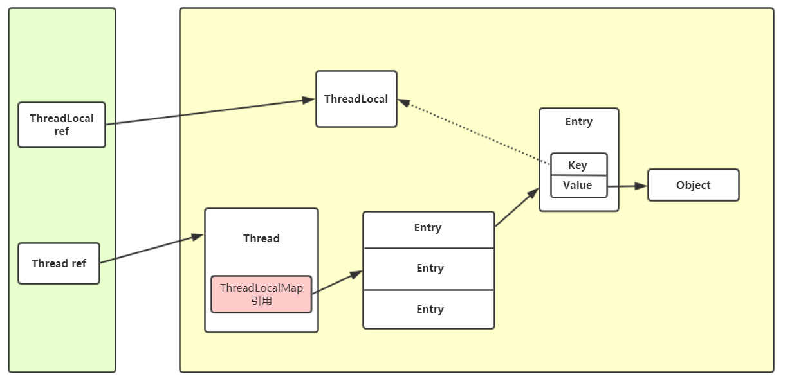
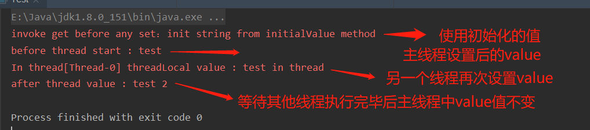

在多线程的环境中，我们经常使用锁来保证线程的安全，但是对于每个线程都要用的资源使用锁的话那么程序执行的效率就会受到影响，这个时候可以把这些资源变成线程封闭的形式。
所谓的栈封闭其实就是使用局部变量存放资源，我们知道局部变量在内存中是存放在虚拟机栈中，而栈又是每个线程私有独立的，所以这样可以保证线程的安全。
我们先看ThreadLocal和线程Thread的关系图。

再看下ThreadLocal的操作，以get为例
public T get() {
// 当前线程
Thread t = Thread.currentThread();
// 拿到当前线程的threadLocalMap，即上图中的map引用
ThreadLocalMap map = getMap(t);
if (map != null) {
// 拿到当前ThreadLocal为Key对应的Entry，里面做了防止内存泄漏的处理
ThreadLocalMap.Entry e = map.getEntry(this);
if (e != null) {
@SuppressWarnings("unchecked")
T result = (T)e.value;
return result;
}
}
// 如果为null设置默认值
return setInitialValue();
}如上面get方法的源码所示，在调用threadLocal.get()方法的时候，threadLocal拿到当前线程中ThreadLocalMap中以threadLocal自身为key对应的entry，在这个getEntry方法中里面做了内存泄漏的处理，大概处理逻辑就是如果threadLocal对应的Entry为null的话，让这个entry的value为null并且map中threadLocal对应下标置null，如果不为null的话返回，否则的话则调用默认值方法setInitialValue()
private T setInitialValue() {
T value = initialValue();
Thread t = Thread.currentThread();
ThreadLocalMap map = getMap(t);
if (map != null)
map.set(this, value);
else
createMap(t, value);
return value;
}
// 默认null实现
protected T initialValue() {
return null;
}setInitialValue()方法逻辑比较简单，这里不多赘述，值得注意的是里面调用的initialValue()，并没有任何的实现，所以我们使用threadLocal的时候一般都会选择重写实现这个方法。
// 这里main方法测试，所以用static修饰，会延长threadLocal的生命周期，有内存泄漏的风险，一般作为成员变量就足够了
public static ThreadLocal<String> threadLocal = new ThreadLocal<String>(){
@Override
protected String initialValue() {
return "init string from initialValue method";
}
};
public static void main(String[] args) throws InterruptedException {
// 未放入value直接调用get
System.err.println("invoke get before any set：" + threadLocal.get());
threadLocal.set("test");
System.err.println("before thread start : " + threadLocal.get());
new Thread(() -> {
// 对相同的threadLocal对象放入值
threadLocal.set("test in thread");
System.err.println("In thread[" + Thread.currentThread().getName() + "] threadLocal value : " + threadLocal.get());
}).start();
TimeUnit.SECONDS.sleep(1);
// 证明threadLocal中的value不在线程中共享
System.err.println("after thread value : " + threadLocal.get());
}
result:
 结合这个小程序和上面的图就可以对threadLocal有一个大概的理解了。其他的方法如set、remove等方法都大同小异，可以结合图片去看源码，这里不再赘述。关于内存泄漏的问题:
1、在threadLocal的get、set、remove方法中，其对本身可能发生的内存泄漏都做了处理，内部逻辑上面也提到了。如果对应entry为null，将其value置null，将map中对应下标引用置null。
2、而对于threadLocal中这个对象的泄漏来说，则是采用弱引用的方式来实现，在上面的图中，我用虚线来表示弱引用，弱引用的意思是在JVM进行垃圾回收的时候这个引用会被回收（无论内存足够与否）;试想一下，如果使用强引用并且栈中的引用消失了，那么在线程结束之前这个threadLocal对象不会被回收且无法访问，也就是造成内存泄漏。
上面在ThreadLocal提到了弱引用，这里顺便简单的说下Java中的四种引用。
若有不正之处，望指出！